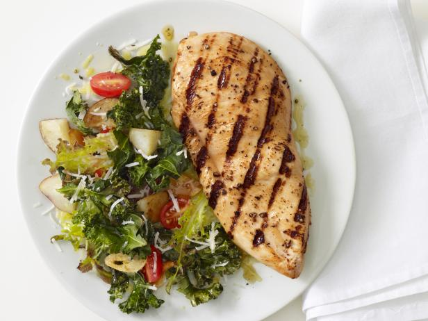
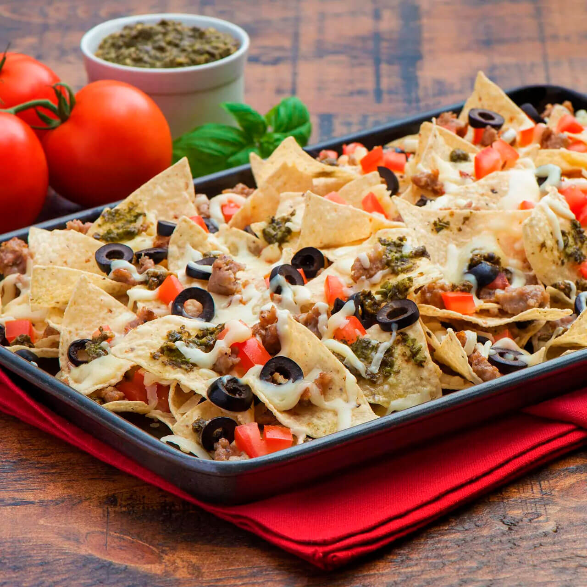
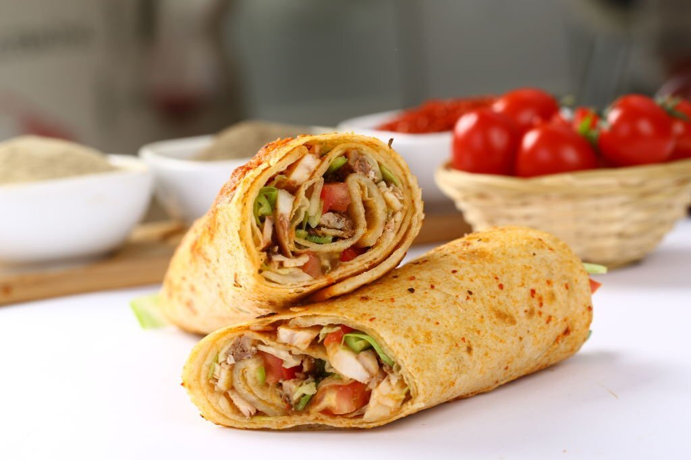

Discover
Menu
For those with pure food indulgence in mind, come next door and sate your desires with our ever changing internationally and seasonally inspired small plates. We love food, lots of different food, just like you.